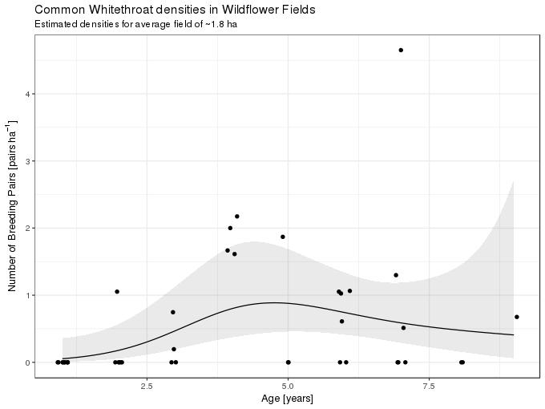
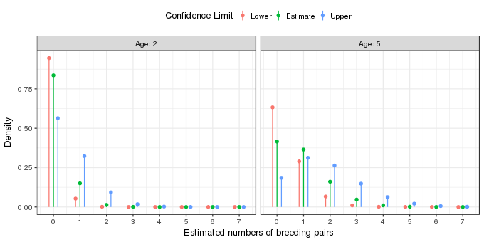

Prediction intervals for GLMs part II
Poisson GLMs
Posted in
Tagged
GLM models prediction interval statistical modelling Poisson offset counts GAM
One of my more popular answers on StackOverflow concerns the issue of prediction intervals for a generalized linear model (GLM). Comments, even on StackOverflow, aren’t a good place for a discussion so I thought I’d post something hereon my blog that went into a bit more detail as to why, for some common types of GLMs, prediction intervals aren’t that useful and require a lot more thinking about what they mean and how they should be calculated. I’ve broken it into two and in this, the second part, I look at Possion models.
The second example — purely because I happen to have it handy from teaching this semester — is from Korner-Nievergelt et al. (2015), and concerns the number of breeding pairs of the common whitethroat (Silvia communis). This species likes to inhabit field margins and fallow lands and has been adversely affected by intensive agricultural activities reducing these types of habitat on the landscape. As a mitigiation effort, wildflower fields are sown and left largely unmanaged for several years. The data come from a study looking at how the number of breeding pairs of common whitethroat change as the composition and structure of the plant community changes over time. The data are in the blmeco package available on CRAN.
## install.packages("blmeco") # first, if not already installed
library("blmeco")
data(wildflowerfields)
library("ggplot2")
theme_set(theme_bw())The example in Korner-Nievergelt et al. (2015) uses a Poisson GLM with a quadratic effect of the variable age. Instead I’ll use a Poisson GAM, but in all other respects the analysis follows that from the text book (only the year 2007 data are used, field size transformed to hectares).
library("mgcv")
wf <- transform(subset(wildflowerfields, year == 2007), size = size / 100)
wf <- transform(wf, size.z = (size - mean(size)) / sd(size))
mod <- gam(bp ~ s(age, k = 6) + size.z + offset(log(size)), data = wf, family = poisson, method = "REML")
summary(mod)Family: poisson
Link function: log
Formula:
bp ~ s(age, k = 6) + size.z + offset(log(size))
Parametric coefficients:
Estimate Std. Error z value Pr(>|z|)
(Intercept) -1.1791 0.3333 -3.538 0.000404 ***
size.z -0.5283 0.2893 -1.826 0.067861 .
---
Signif. codes: 0 '***' 0.001 '**' 0.01 '*' 0.05 '.' 0.1 ' ' 1
Approximate significance of smooth terms:
edf Ref.df Chi.sq p-value
s(age) 2.608 3.223 7.323 0.074 .
---
Signif. codes: 0 '***' 0.001 '**' 0.01 '*' 0.05 '.' 0.1 ' ' 1
R-sq.(adj) = 0.207 Deviance explained = 46.3%
-REML = 33.589 Scale est. = 1 n = 41
The primary variable of interest shows a moderate amount of non-linearity, similar to that of the quadratic effect of age in the version from the text book, though the effect of field age is weak at best. The fitted model is illustrated graphically below, holding size constant at the mean field size
ilink <- family(mod)$linkinv
newd <- with(wf, expand.grid(age = seq(min(age), max(age), length = 300),
size = 1, size.z = 0))
newd <- cbind(newd, as.data.frame(predict(mod, newd, type = "link", se.fit = TRUE)))
newd <- transform(newd, fitted = ilink(fit), upper = ilink(fit + (2 * se.fit)),
lower = ilink(fit - (2 * se.fit)))
ggplot(wf, aes(x = age, y = bp/size)) +
geom_ribbon(data = newd, mapping = aes(ymin = lower, ymax = upper, x = age),
alpha = 0.1, inherit.aes = FALSE) +
geom_line(data = newd, mapping = aes(y = fitted)) +
geom_jitter(width = 0.1, height = 0) +
labs(x = "Age [years]", y = expression("Number of Breeding Pairs [" * pairs ~ ha^{-1} * "]"),
title = "Common Whitethroat densities in Wildflower Fields",
subtitle = "Estimated densities for average field of ~1.8 ha")
So far so good, but how do we interpret this model? For simplicity, lets assume that fields only come in integer ages. What the model implies is that for each integer age the observations are best fitted by (or described by; or generated from) a Poisson model with parameter \(\lambda\) equal to the value of the solid line at each particular age. This value of \(\lambda\) is just an estimate of the true value and so we might envisage the observations for each year as having come from Poisson distributions with values of \(\lambda\) given by the values of the upper and lower confidence band also shown in the figure above. For fields of two and five years of age these distributions look like this

The fitted Poisson distributions for the two field ages are shown by the green points and lines in the figure above. The effect of field age is to shift the estimated Poisson distribution to the right, towards on average higher numbers of breeding pairs. The uncertainty in the estimated model is shown by the orange and blue points and lines; these are based on the lower and upper 95% pointwise confidence interval on the estimate mean number of breeding pairs for fields of two and five years of age. The orange points illustrate the Poisson distribution from which the points might have been derived if the true value of \(\lambda\) were at the lower end of the confidence interval. The blue points show the Poisson distribution if the true values of \(\lambda\) was at the upper end of the confidence interval. Each of these distributions implies, potentially at least, different predicted numbers of breeding pairs.
We have estimated the expected number of breeding pairs given the age of the field and it’s size. We also have a (pointwise) 95% confidence interval on that expectation. As before, this isn’t a prediction interval, so what would one of those look like in this case? Somewhat similar to those we created for the binomial GLM earlier, except now we have posterior densities (the probability density implied by the Poisson distribution with \(\lambda\) given as a function of field age) for all the integers 0–∞, although once we get above 10 breeding pairs the density is going to be effectively 0 even if not technically so.
Note that I said integers above; we can’t have 2.5 breeding pairs as a prediction. Hence any prediction interval is really talking about points of probability for each integer \(\in \{0, 1, 2, \infty\}\) (even if we might consider a much smaller upper limit than that) not a continuous interval. Having said that, perhaps I’m being to pedantic? In some instances, the upper and lower 2.5th and 97.5th probability quantiles of the implied Poisson distribution do begin to look more like a prediction interval.
To illustrate I’ll work my way through some code to illustrate some ways of thinking about what the fitted model says in terms of predicting the numbers of breeding pairs of common whitethroats. First a little bit of prep; I’ll illustrate various intervals for two hypothetical fields or average size, one created two years ago and a second five years ago.
p <- data.frame(age = c(2, 5), size = 1, size.z = 0)
pred <- setNames(as.data.frame(predict(mod, p, se.fit = TRUE)), c("fit", "se"))
p <- cbind(p, pred)
p <- transform(p, lower = ilink(fit - (2 * se)),
lambda = ilink(fit), upper = ilink(fit + (2 * se)))
p age size size.z fit se lower lambda upper
1 2 1 0 -1.7184424 0.5805902 0.05615594 0.1793453 0.5727752
2 5 1 0 -0.1295676 0.3260103 0.45767855 0.8784752 1.6861589
p contains the estimated value of \(\lambda\) (the expected number of breeding pairs), and the upper and lower 95% pointwise interval about this expected count, for the two fields. First, the 95% interval for the model estimated \(\lambda\) for the younger of the two fields, based on qpois(), the quantile function of the conditional distribution of the number of breeding pairs given field age
qpois(c(0.025, 0.975), lambda = p[1, "lambda"])[1] 0 1
Hence we might expect either 0, 1 breeding pairs. But, we haven’t accounted for the uncertainty in the estimated \(\lambda\). At the lower end of of the 95% interval on the estimated \(\lambda\) the prediction interval would be
qpois(c(0.025, 0.975), lambda = p[1, "lower"])[1] 0 1
and
qpois(c(0.025, 0.975), lambda = p[1, "upper"])[1] 0 2
for the upper end, leading to a prediction interval of 0–2 breeding pairs. The same prediction interval for the five year old field would be
qpois(c(0.025, 0.975), lambda = c(p[2, "lower"], p[2, "upper"]))[1] 0 5
We can also look at the probability densities of the poisson distribution for the estimated value of \(\lambda\) and its 95% confidence interval. The table below shows these probability densities for a two-year old field
| # of pairs | lower | estimate | upper |
|---|---|---|---|
| 0 | 0.9454 | 0.8358 | 0.5640 |
| 1 | 0.0531 | 0.1499 | 0.3230 |
| 2 | 0.0015 | 0.0134 | 0.0925 |
| 3 | 0.0000 | 0.0008 | 0.0177 |
| 4 | 0.0000 | 0.0000 | 0.0025 |
| 5 | 0.0000 | 0.0000 | 0.0003 |
| 6 | 0.0000 | 0.0000 | 0.0000 |
| 7 | 0.0000 | 0.0000 | 0.0000 |
For example, we’d expect to observe no breeding pairs in 95–56% of average sized, two-year old fields. The same values are shown for a five-year old tree in the table below
| # of pairs | lower | estimate | upper |
|---|---|---|---|
| 0 | 0.6328 | 0.4154 | 0.1852 |
| 1 | 0.2896 | 0.3649 | 0.3123 |
| 2 | 0.0663 | 0.1603 | 0.2633 |
| 3 | 0.0101 | 0.0469 | 0.1480 |
| 4 | 0.0012 | 0.0103 | 0.0624 |
| 5 | 0.0001 | 0.0018 | 0.0210 |
| 6 | 0.0000 | 0.0003 | 0.0059 |
| 7 | 0.0000 | 0.0000 | 0.0014 |
I could repeat the process of simulating breeding pairs from the poisson distributions with estimated values of \(\lambda\) but the code to illustrate this gets tedious and this post is long enough already.
The prediction intervals for the Poisson model are starting to look more like intervals than the ones for the binomial model we looked at earlier. They’re still not something we can easily convey on a plot like we can with linear models and predict.lm, however.
For continous conditional distributions, prediction “intervals” act like their linear model counterparts, as long as we take the extra step of computing the prediction interval using the probability quantile function (the qfoo() functions in R where foo is the abbreviation for the distribution) and potentially include the uncertainty in the estimated expectations (fitted values on the response scale) as we did in both examples above.
Ok, I think that’s enough modelling pedantry for one [Ed: er-um, two] post.